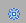

Narzędzia dodatków
Dodatki to części, które można dodać do stron witryny Novell Teaming. Sprawiają one, że istniejące informacje są lepiej widoczne i łatwiej dostępne. Zawierają one dodatkowe funkcje i poszerzają możliwości pracy zespołowej i komunikacji. Poniżej przedstawiono kilka przykładów dodatków:
-
Wyniki wyszukiwania (z możliwością ograniczenia tylko do bieżącego miejsca)
-
Lista znajomych (z możliwością ograniczenia tylko do ekspertów w danej dziedzinie w bieżącej lokalizacji)
-
Drzewo obszaru roboczego (otwarte aż do tego miejsca w hierarchii)
-
Księga gości
Kompletną listę dodatków systemu Teaming z ich opisami podano w rozdziale Types of Accessories
(Typy dodatków) w przewodniku Novell Teaming 2.1 User Guide.
Poniższe tematy zawierają opis korzystania z panelu dodatków:
Dodawanie dodatku
Aby dodać dodatek do panelu, należy:
-
Kliknąć .
-
W części wybrać żądany zakres dodatku.
Aby dowiedzieć się więcej na temat opcji w tej części, proszę zapoznać się z rozdziałem Konfigurowanie praw do wyświetlania dodatków.
-
W części wybrać typ dodatku, który ma zostać dodany.
-
Proszę nacisnąć przycisk .
-
Podać tytuł dla dodatku oraz pozostałe istotne informacje.
Aby uzyskać więcej informacji na temat podawania informacji odpowiednich dla każdego z typów dodatków, proszę zapoznać się z rozdziałem
Setting Up the Accessory
(Ustawienia dodatków) w przewodniku Novell Teaming 2.1 User Guide. -
Następnie trzeba kliknąć > .
Konfigurowanie praw do wyświetlania dodatków
W trakcie dodawania dodatku użytkownik może wybrać jego zakres. W części można skorzystać z następujących opcji:
-
Osobisty dodatek tylko dla tej strony: Dodatek przypisany jest tylko do bieżącego miejsca i może być wyświetlany tylko przez właściciela.
-
Osobisty dodatek dla wszystkich obszarów roboczych i folderów: Dodatek przypisany jest do wszystkich obszarów roboczych i folderów i może być wyświetlany tylko przez właściciela.
-
Wspólny dodatek tylko dla tej strony: Dodatek przypisany jest tylko do tej strony i może być wyświetlany tylko przez użytkowników, którzy mają prawa dostępu do tej strony.
Zmiana kolejności dodatków
Witryna Teaming pozwala na zmianę układu dodatków na dowolnej stronie zawierającej więcej niż jeden dodatek.
-
W tym celu w prawym górnym rogu paska tytułowego dodatku należy kliknąć strzałkę w górę lub strzałkę w dół
 w zależności od tego, czy dodatek ma być przeniesiony w górę czy w dół.
w zależności od tego, czy dodatek ma być przeniesiony w górę czy w dół.
Ponowna konfiguracja dodatku
Witryna Teaming pozwala na ponowną konfigurację dodatku po tym, jak został on już utworzony.
-
W tym celu w prawym górnym rogu paska tytułowego dodatku należy kliknąć ikonę .
Usuwanie dodatku
-
W tym celu w prawym górnym rogu paska tytułowego dodatku należy kliknąć ikonę .
Ukrywanie dodatków
Witryna Teaming pozwala użytkownikowi na ukrycie dodatku, tak aby widoczny był tylko jego pasek tytułowy.
-
W tym celu w prawym górnym rogu paska tytułowego dodatku należy kliknąć ikonę
 .
.
Można także jednocześnie ukryć wszystkie dodatki w panelu dodatków.
-
W tym celu trzeba kliknąć ikonę znajdującą się obok .
Wszystkie dodatki z bieżącej strony zostaną ukryte.
Aby odkryć dodatki, należy kliknąć ponownie ikonę .